Physikalische Simulation von Wasserwellen
Alles fließt
Nutzen Sie Forschungsergebnisse aus der Ozeanographie, um Wasserwellen physikalisch zu simulieren. Sie animieren realistische Wellen.
Carsten Dachsbacher
Um 3D-Welten in Spielen darzustellen, genügt es nicht mehr, die 3D-Szenen technisch und künstlerisch ansprechend zu rendern. In den letzen Jahren begannen Programmierer deshalb physikalische Vorgänge erfolgreich zu simulieren. Meist beschränkte sich die Simulation in Computerspielen darauf, starre Körper zu bewegen und Kollisionen zu berechnen. Der zweite große Trend zeigte dann, wie sich große Outdoor-Spielewelten mit eindrucksvollen Landschaften und blühender Flora und Fauna rendern ließen.
Wir widmen uns in dieser Ausgabe der physikalischen Simulation von Wasserwellen, in tiefem Wasser, wie Sie es vom Meer her kennen. Dieses Gebiet wurde von professionellen Forschern genau untersucht. Diese Experten sind nicht als Programmierer oder Grafiker ausgebildet. Die Profis im Dienst der Marine berechnen, wie sich Schiffe auf offener und schwerer See bewähren müssen.
Wellen aus Sinusschwingungen
Wenn Sie über die Simulation von Wellen nachdenken, mag Ihnen ein Polygongitter in den Sinn kommen. Bei diesem verschieben Sie die Position der Vertizes, womit der richtige Anfang gemacht ist. Im nächsten Schritt perfektionieren Sie die Bewegung dadurch, dass Sie die Verschiebung nach oben und unten durch überlagerte Sinusschwingungen steuern und berechnen. Damit vermitteln Sie einen Eindruck, dass es sich um Wasser handelt,.
Die beiden Forscher Pierson und Moskowitz haben in ihren Untersuchungen im Jahr 1964 festgestellt, dass sich die Bewegung der Wasseroberfläche durch eine Überlagerung der richtigen Sinusschwingungen darstellen lässt. Dazu haben sie eine ganze Reihe von Windseen untersucht.
Die Pierson-Moskowitz-Formel
Das Ergebnis ihrer Arbeit war die sogenannte Pierson-Moskowitz-Formel (kurz PM-Formel). Mit dieser Formel können Sie für eine konstante Windgeschwindigkeit die spektrale Energieverteilung eines voll entwickelten Windsees berechnen. Vollentwickelt bedeutet, Sie berechnen die Wellen für einen Zeitpunkt, zu dem der Wind schon so lange auf das Wasser gewirkt hat, dass sich eine Art Gleichgewicht gebildet hat zwischen der Interaktion Wind-Wasser.
Die spektrale Energieverteilung besagt, wie stark welche Sinusfrequenz zu der Wasseroberfläche beiträgt (ihre Amplitude). Die PM-Formel berechnet die Wellen auf der Grundlage des Windes. Wind ist auch der Hauptverursacher an Wellen auf dem Meer. Der Wind verursacht auf eine Wasseroberfläche Wellen, weil sich durch kleine Turbulenzen der Luftdruck über der Wasseroberfläche ändert und somit auf sie wirkt.
Die PM-Formel für die Peakfrequenz (die stärkste Sinusschwingung im Spektrum) und die eindimensionale Energieverteilung, die sich aus den Versuchen ergab, sieht wie folgt aus: 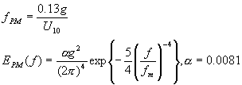
Im Bild sehen Sie das mit der Formel berechnete Spektrum für die Windgeschwindigkeit, die in 10 Meter Höhe gemessen wird, mit einem Wert von:
U(10) = 5m/sMit der Dispersionsgleichung für Gravitationswellen in tiefem Wasser können Sie die Wellenlängen, bzw. den Wellenlängenbereich mit der meisten Energie, berechnen. Die Konstante g ist die Erdbeschleunigung und k=2*pi/lambda die Wellennummer: 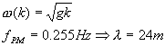
Eine weitere Formel ist das Jonswap-Spektrum: 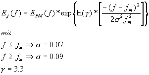
Für das Jonswap Modell gibt es noch eine spezielle Funktion, mit der Sie die Peakfrequenz berechnen können: 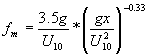
Der Unterschied zwischen den verschiedenen Formeln für die Energieverteilung liegt hauptsächlich in der Ausprägung des Maximums. Alle diese Formeln basieren auf Beobachtungen. Deshalb gibt es unterschiedliche Formeln für einen Vorgang. Allgemein gilt: Wenn die Windgeschwindigkeit zunimmt, wird die Peakfrequenz kleiner und die Wellenlänge größer. Wer dies beobachten konnte, wird sich dieser Faustregel anschließen. Umgekehrt ist einsichtig, dass bei Windstille keine Wellen auftreten.
Die Richtung der Sinuswellen
Mit den Formeln, die wir Ihnen bisher vorgestellt haben, können Sie die Amplitude der Sinusschwingungen für eine Wasseroberfläche in Abhängigkeit von der Windstärke berechnen. Für die Darstellung der Wasseroberfläche reicht diese Information nicht aus. Sie benötigen noch das Wissen über die Richtung, in der eine Sinuswelle läuft, also die Richtungsverteilung. Diese ist natürlich abhängig von der Windrichtung. Diese Verteilung können Sie mit der Formel von Mitsuyasu bestimmen. 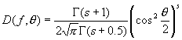
Diese berechnet die Energie, die eine Welle der Frequenz f hat, die im Winkel Theta zur Windrichtung läuft: 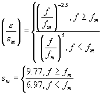
Für die Formel benötigen Sie folgende Fallunterscheidungen: 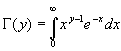
Die Gamma-Funktion ist wie folgt definiert:
Aus den genannten Formeln und der PM-Formel (oder einer anderen Frequenz-Energie-Verteilungsfunktion) erhalten Sie dann die zweidimensionale Energieverteilungsfunktion: 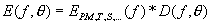
In Bild sehen Sie eine dieser Energieverteilungen als 3D-Diagramm.
Die Berechnung der Amplitude
Aus der zweidimensionalen Energieverteilungsfunktion können Sie die Amplitude berechnen. Dazu müssen Sie folgende Berechnungen durchführen: 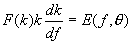
Die Ableitung von dk/df (sprich dknach df) berechnen Sie aus der Dispersionsgleichung: 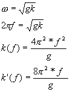
Jetzt lösen Sie die obige Gleichung nach F(k) auf 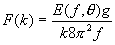 und setzen Sie in 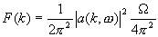 ein. Bei dem Omega Term handelt es sich um einen Korrekturterm, dessen mathematische Notwendigkeit für unsere Anwendung nicht konkret berechnet wird. Durch weitere Vereinfachung und Auflösung, erhalten Sie für die Amplitude folgende Formel 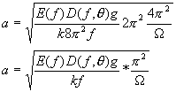
Nun haben Sie die endgültige Formel, die Ihnen die Amplitude zu einer Sinusschwingung auf der Wasseroberfläche berechnet.
Vereinfachung für Echtzeit 3D-Grafik
Das berechnete Spektrum und die Energieverteilung sind kontinuierlich. Das bedeutet, dass die Ergebnisse die Energieverteilung für unendlich viele überlagerte Sinuswellen jeglicher Frequenz und Richtung darstellen. Auch wenn der Bereich der Funktionen eingeschränkt ist, in denen sie bedeutend größer als Null sind (sichtbarer Beitrag zum gerenderten Bild), sind im entsprechenden Bereich immer noch unendlich viele Frequenzen und Richtungen enthalten.
Verwenden Sie ein Polygongitter, dessen Vertizes Sie verschieben, um die Wellenbewegung darzustellen. Die Anzahl der Sinuswellen, die Sie in der Berechung überlagern, wird aber deutlich durch die Größe des Gitters und der verfügbaren Rechenzeit eingeschränkt. Suchen Sie sich in der Vorberechnungsphase eine zufällige Frequenz und eine zufällige Richtung der Welle aus. Mit Hilfe der obigen Formeln können Sie die Amplitude dieser Welle berechnen. Wenn die Amplitude einen – von Ihnen gewählten – Grenzwert nicht überschreitet, also zu schwach ist, um im Bild sichtbar zu sein, verwerfen Sie die Zufallswerte und generieren eine neue Welle. Sie speichern also nur die Sinuswellen, die stark genug sind. Für den visuellen Eindruck genügen etwa 16 bis 32 dieser ausgewählten Wellen.
Die Implementation
Nachdem Sie die Windgeschwindigkeit und Windrichtung festgelegt haben, berechnen Sie zunächst die Peakfrequenz:
const float windSpeed = 5.5f;
const float windDirection = 0.0f;
const float gravity = 9.81f;
float freqPeak = 0.13f * gravity / windSpeed;
Zur Berechnung der Amplitude verwenden Sie folgende Funktionen für die Richtungs- und frequenzabhängige-Energieverteilung:
float directionEnergy(float f, float theta)
{
float temp = cos(theta * 0.5f);
temp *= temp;
float s_sm, sm;
if(f >= freqPeak)
{
s_sm = pow(f / freqPeak, -2.5f);
sm = 9.77f;
} else
{
s_sm = pow(f / freqPeak, 5.0f);
sm = 6.97f;
}
float s = s_sm * sm;
return gamma(s+1) * pow(temp, s) /
(2.0 * sqrt(M_PI) * gamma(s + 0.5));
}
float energy1DFreq(float f)
{
return alpha * gravity2 /
(pow(2.0f * M_PI, 4) * pow(f, 5)) *
exp(-5.0 / 4.0 * pow((f / freqPeak), 4.0));
}
float energy2DFreqAngle(float f, float theta)
{
return energy1DFreq(f) *
directionEnergy(f, theta);
}
Mit den gerade beschriebenen Funktionen können Sie die Amplitude einer Welle wie folgt berechnen:
float waveAmplitude(float f, float theta, float k)
{
float omega = 10.0f;
return sqrt(energy2DFreqAngle(f, theta) *
gravity * M_PI * M_PI / (k * f * omega));
}
Als nächstes erzeugen Sie die einzelnen Wellen und berechnen deren Parameter. Die Parameter speichern Sie für jede Welle in einer Struktur:
typedef struct
{
// Richtung (Winkel)
float direction;
// Richtung (Vektor)
float dirX, dirY;
// Wellenlänge
float lambda;
// Wellennummer
float k;
// Winkelgeschwindigkeit
float omega;
// Frequenz
float freq;
// Periodenlänge
float periode;
// Amplitude
float amplitude;
// Phase
float phase;
} WAVE;
int nWaves;
WAVE wave[MAX_WAVES];
Die Berechnung und Selektion der Wellen erfolgen in einer While-Schleife:
WAVE *w = &wave[0];
nWaves = 0;
while(nWaves < 32)
{
// zufällige Frequenz
float frequency = freqPeak +
rand() / 32768.0f - 0.5f;
Durch den Zufallszahlengenerator können auch negative Frequenzen auftauchen, die wir gleich an dieser Stelle ausschließen wollen:
if (frequency > 0.0f)
{
w->lambda = 2.0f * M_PI / (pow(
2.0f * M_PI * frequency, 2.0f) /
gravity);
w->k = 2.0f * M_PI / w->lambda;
w->omega = sqrt(gravity * w->k);
w->freq = w->omega / (2.0f * M_PI);
w->periode = 1.0f / w->freq;
Aus der Richtung als Winkel ergibt sich der Vektor
w->direction = 0.0f + (rand() /
16384.0f + 0.5f) * M_PI;
w->dirX = cos(w->direction) * 0.5f;
w->dirY = sin(w->direction) * 0.5f;
Die Startphase der Welle bestimmen Sie auch durch einen Zufallswert
float phi0 = rand() / 16384.0f * M_PI;
float a0 = waveAmplitude(w->freq,
w->direction - windDirection, w->k);
w->amplitude = a0 * cos(phi0);
w->phase = a0 * sin(phi0);
Die Welle ist nur interessant, wenn Ihre berechnete Amplitude groß genug ist:
if (fabs(w->amplitude) >= 0.0001f)
{
w++;
nWaves++;
}
Zeitliche Animation der Wellen
Jetzt haben Sie alle Vorbereitungen getroffen, um mit der eigentlichen Animation des Wassers zu beginnen. Die Implementation des Renderings, dass Sie auf der Heft CD oder im Internet finden, verwendet den schon mehrmals eingesetzten PC Underground OpenGL Startup. Im Beispielprogramm wurde auf Geschwindigkeit optimiertes Rendering zu Gunsten der Übersichtlichkeit verzichtet.
Um die Wasserfläche zu rendern, benötigen Sie ein zweidimensionales Array, in dem Sie die Höhenverschiebung des entsprechenden Gitterpunktes (Vertex) speichern. Für die realistische Beleuchtung verwenden Sie außerdem eine Oberflächennormale für jeden Vertex:
#define WATERX 128
#define WATERY 128
typedef struct
{
float x, y, z;
} VERTEX3D;
float *waterHeight;
VERTEX3D *waterNormal;
waterHeight = new float[WATERX * WATERY];
waterNormal = new VERTEX3D[WATERX * WATERY];
Berechnen Sie während der Animation für einen Zeitpunkt time die aktuellen Gitterverschiebungen für jeden Punkt des Gitters:
for (j = 0; j < WATERY; j++)
for (i = 0; i < WATERX; i++)
{
float h = 0.0f;
Sie überlagern alle Wellen
for (k = 0; k < nWaves; k++)
{
wave *w = &wave[k];
Entscheidend ist zum einen die Amplitude der Welle. Die Phase der Sinuswelle setzt sich aus der initialen Phase und der zeit- und ortsabhängigen Phasenverschiebung zusammen:
h += w->amplitude *
sin(
// Initiale Phase
w->phase +
// Ausbreitungsgeschwindigkeit
w->omega*w->freq * (
// Zeitliche Verschiebung
time +
// Ortsabhängige Verschiebung
w->dirX * i +
w->dirY * j)
);
}
}
waterHeight[i + j * WATERX] = h;
Für die Darstellung müssen Sie noch die Oberflächennormalen berechnen. Es genügt, diese in einer Näherung zu berechnen. Alles andere wäre viel zu rechenintensiv für eine Echtzeitanwendung.
Die Normale eines Punktes berechnen Sie durch die Höhendifferenz seiner Nachbarpunkte. Die X-Komponente der Normalen erhalten Sie durch die horizontalen Nachbarn im waterHeight-Array, die Z-Komponente aus den vertikalen. Die Y-Komponente, die nach oben zeigt, setzen Sie auf einen konstanten Wert:
for (j = 0; j < WATERY; j++)
for (int i = 0; i < WATERX; i++)
{
float x, y, z, l;
x = waterHeight[( i + 1) +
j * WATERX] -
waterHeight[(i - 1) +
j * WATERX];
z = waterHeight[i +
( j + 1) * WATERX] -
waterHeight[i + (j - 1) *
WATERX];
y = 8.0f;
waterNormal[i + j * WATERX].x = x;
waterNormal[i + j * WATERX].y = y;
waterNormal[i + j * WATERX].z = z;
}
Die Normalen brauchen Sie nicht normalisieren. OpenGL übernimmt das für Sie beim Rendering, wenn Sie glEnable( GL_NORMALIZE) nutzen.
Mit der Höheninformation und den Normalen für die Vertizes können Sie nun die Wasseroberfläche rendern. Diese rendern Sie am besten mit der Grundfarbe Ihres Wasser, also einem Blauton und einer Textur, die Struktur von Wasserwellen abbildet.
Außerdem schalten Sie die OpenGL Beleuchtungsberechnung ein. Wenn Sie Specular Highlights (Spiegelnde Reflexion) anschalten, können Sie den Eindruck vermitteln, als ob die Sonne sich auf dem Wasser spiegelt. Damit erhalten Sie Resultate wie in den nächsten Bildern mit leichtem Wind und etwas stärkerem Seegang. Der Himmel in den Screenshots wurde einfach mit einer Hintergrundbitmap erzeugt. So zeichnen Sie die Wasseroberfläche:
glColor3ub(120, 200, 255);
glDepthFunc(GL_LEQUAL);
// Texturwählen
bump->select();
for (int j = 0; j < WATERY; j++)
{
glBegin(GL_QUAD_STRIP);
for (int i = 0; i < WATERX; i++)
{
int x = i&(WATERX - 1);
int y = j&(WATERY - 1);
int y1 = (j + 1)&(WATERY - 1);
glNormal3fv(&waterNormal[x + y * WATERX]);
glTexCoord2f(i * 0.3f,j * 0.3f);
glVertex3f((i - WATERX / 2),
waterHeight[x + y * WATERX],
(j - WATERY / 2));
glNormal3fv(&waterNormal [x + y1 * WATERX]);
glTexCoord2f(i * 0.3f, (j + 1) * 0.3f);
glVertex3f((i - WATERX / 2),
waterHeight[x + y1 * WATERX],
(j + 1 - WATERY / 2));
}
glEnd();
}
Sie verbessern die Optik mit einer zusätzlichen Reflectionmap. Diese spiegelt den Himmel auf der Wasseroberfläche.
OpenGL berechnet für Sie die Texturkoordinaten für die Reflectionmap aus den Vertexkoordinaten oder den Normalen des Gitters. Die dafür nötigen Befehle sind glTexGeni(...) und glTexGenf(...). Damit können Sie die automatische Texturgenerierung steuern.
Die Darstellung des Wassers lässt sich optimieren. Im Beispielprogramm sehen Sie mit eingeschaltetem Wireframe Rendering, das die weiter entfernten Polygone sehr klein werden. Das Gitter benötigt eine so hohe Auflösung, da das Wasser sonst von nahem zu grob wirkt. Rechnen Sie die Höhe eines beliebigen Punktes aus: Sie können Polygonstrukturen verwenden, die eine bessere Auflösungsverteilung haben. Weitere Informationen finden Sie unter unserer Underground-Homepage www.dachsbacher.de/pcu.